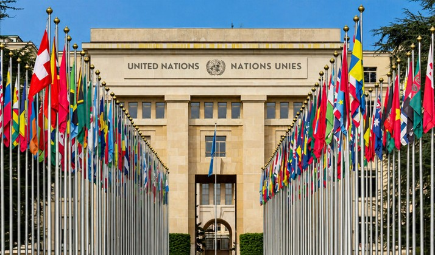
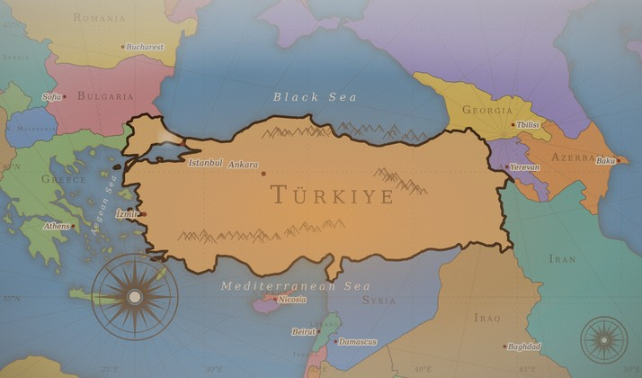
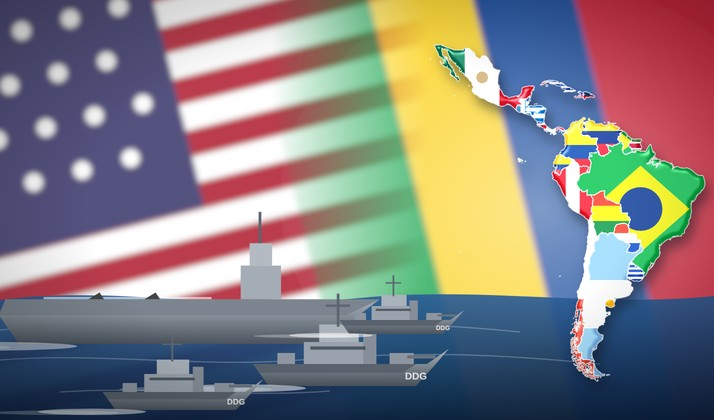
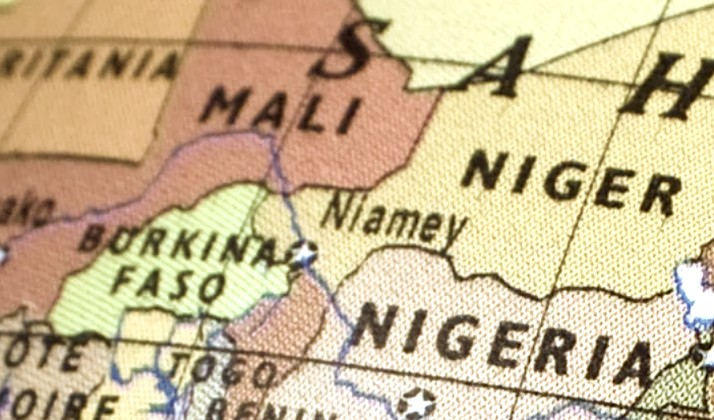
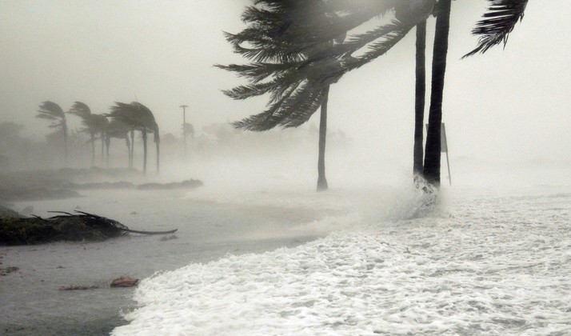
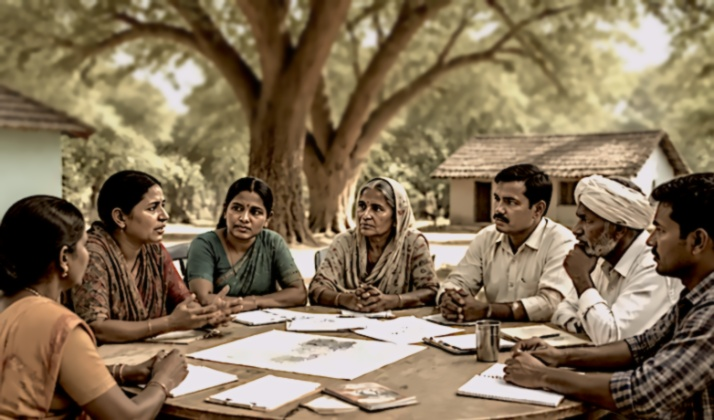

Nonfiction & media
Global Affairs
-
Why the WEF Should Have Said No to Trump
-
One Way to Re-engineer “All-Male” Panels
-

-
TV interview
Interview on Fikir Atlası (Atlas of Ideas)

-
Review: The Purpose of Intervention by Martha Finnemore

-
Haron Amin: A Spiritual Journey
-
Contributing author
Climate Change, Migration and Conflict: Addressing Complex Crisis Scenarios in the 21st Century
&
Climate Change, Migration and Conflict in Northwest Africa

-
Co-author and editor
Building Resilience to Natural Disasters: A Framework for Private Sector Engagement

-
Accountability as a Joint US–Chinese Agenda
-
Women’s Leadership for Climate Change: Lessons from the Peace Process in Moving Negotiations Forward

-
Contending Approaches in Disarmament and the Future of Nuclear Non-Proliferation